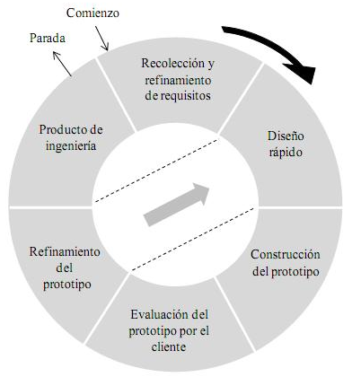

¿Que es la metodologia de Prototipo?
Destaca por no precisar de requerimientos robustos o estables para iniciar el proyecto
facilita la presentación de los resultados del proyecto a los clientes

Caracteristicas
Se centra en un diseño rápido que representa las características
principales del programa que el usuario podrá ver o utilizar
Ventajas
Promueve un mayor acercamiento directo a las necesidades del cliente
Suele confundirse con el producto final
Se precisa de la participación del cliente en el proceso
Desventajas
Generan o pueden generar otro tipo de problemas si su presentación
y discusión con los usuarios no es controlada